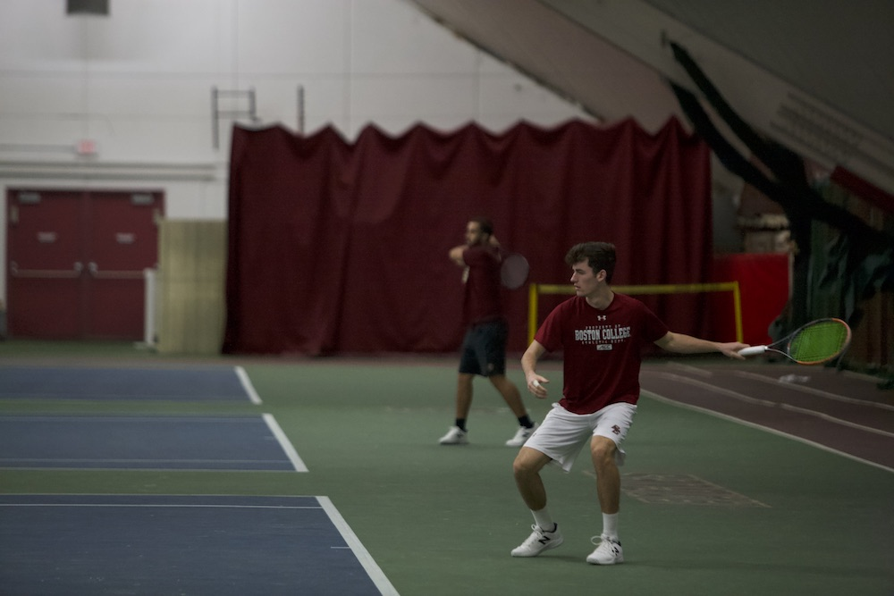

WHAT IS COLLEGE TENNIS?
College tennis – or NCAA tennis – is part of the National Collegiate Athletic Association in the United States. It is a competitive and organized form of tennis where student-athletes represent their colleges or universities in team and individual competitions. The teams will compete in a form of team tennis that leads them to the NCAA championships in team and individuals, in singles and in doubles.
